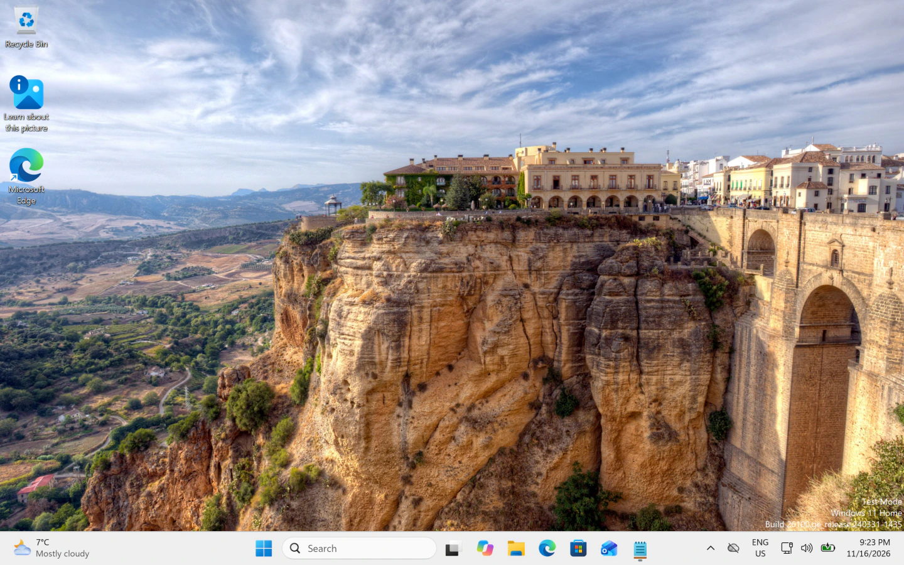
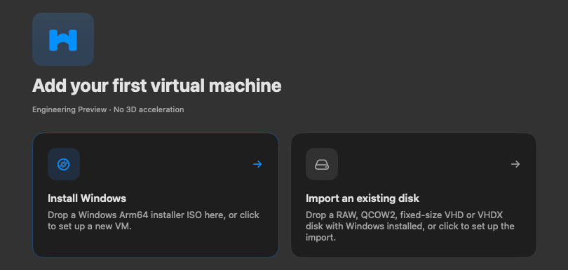

Files & clipboard
Share a folder with Windows and copy text between the two desktops with guest integration enabled.
Run Windows 11 Arm alongside macOS. BridgeVM is an open-source Mac app with its own virtualization engine for Apple silicon.
Apple silicon · macOS 15+ · 19.1 MiB DMG
The v0.1.0 download opens in Korean. English setup steps

Choose the media you have. BridgeVM can install a fresh copy of Windows or import an existing Arm disk.

Share a folder with Windows and copy text between the two desktops with guest integration enabled.
Work in a native Mac window with your keyboard and mouse. Install the guest display driver and restart to let Windows follow the window size.
Shut down Windows and take a snapshot before changing your setup. Restore the saved disk and firmware together.
Running a VM requires Apple silicon and macOS 15 or later. The current host test matrix covers M4 and M5. Earlier Apple silicon generations still need validation.
The app is ad-hoc signed and not notarized. The installation guide includes download verification and the first-open steps. Bring your own licensed Windows 11 Arm media.
Read the installation guide3D acceleration is excluded from General Preview and v1. Hardware tests have observed uneven display updates and audio stutter. ISO setup and disk import on a clean Mac are still under validation.
Known limitationsDuring ISO setup, BridgeVM can fetch the signed ARM64 Red Hat virtio-win drivers and verify the pinned SHA-256. BridgeVM does not redistribute these drivers. You may also select your own signed driver folder and manifest.
Runs an installed Windows 11 Arm desktop on BridgeVM's own Hypervisor.framework VMM with persistent storage, display/input, network, audio, clipboard and folder integration, TPM/Secure Boot workflows, snapshots and window Coherence verbs. 3D acceleration is excluded from General Preview and v1; release-blocking evidence remains open and known defects are disclosed below.
Engineering status · Build from source